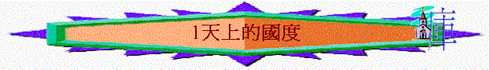

|
天 上 的 國 度 |
屬 靈 的 國 度 |
千 年 的 國 度 |
引言
「你們要先求他的國和他的義，這些東西都要加給你們了。」太6:33
～何謂「神的國」？
～如何追求神的國？
～神的國與我們有甚麼關係？
一.聖經中的國度觀
～聖經提及很多「國」/「國度」與神有密切關係(例如天國、神的國、父的國、基督的國)，但各自也有分別的
1.神管治全地的國度
「神啊，你的寶座是永永遠遠的；你的國權是正直的。」詩45:6
「你的國是永遠的國！你執掌的權柄存到萬代！」詩145:13
「他的神蹟何其大！他的奇事何其盛！他的國是永遠的；他的權柄存到萬代！「我尼布甲尼撒安居在宮中，平順在殿內。我做了一夢，使我懼怕。我在床上的思念，並腦中的異象，使我驚惶。」但4:3-5
「現在我降旨曉諭我所統轄的全國人民，要在但以理的神面前，戰兢恐懼。因為他是永遠長存的活神，他的國永不敗壞；他的權柄永存無極！」但6:26
～神創造天地，祂是全地的神，從宏觀來看，無論整個世界如何，誰在地上作王，神也是全地的主宰，祂的國度永遠長存
2.以色列的國度
「耶和華對亞伯蘭說：「你要離開本地、本族、父家，往我所要指示你的地去。我必叫你成為大國。我必賜福給你，叫你的名為大；你也要叫別人得福。」創12:1-2
「大衛就知道耶和華堅立他作以色列王，又為自己的民以色列使他的國興旺。」撒下5:12
～神雖在全地作王，但在地上卻揀選了亞伯拉罕的後裔----以色列成為屬神的國度，讓世人從以色列國中認識神
3.天上的國度
「從那時候，耶穌就傳起道來，說：「天國近了，你們應當悔改！」」太4:17
「不要為自己積儹財寶在地上；地上有蟲子咬，能銹壞，也有賊挖窟窿來偷。只要積儹財寶在天上；天上沒有蟲子咬，不能銹壞，也沒有賊挖窟窿來偷。」太6:19-20
～馬太福音時常提及「天國」，主說：「天國近了」，證明這國度仍未臨到當時的世代中
～而太6強調天國裏的財寶是在天上，與地上不同，明顯這國度不是在地上，而是在將來的天上
4.屬靈的國度
「法利賽人問：「神的國幾時來到？」耶穌回答說：「神的國來到不是眼所能見的。人也不得說：『看哪，在這裡！看哪，在那裡！』因為神的國就在你們心裡（心裡：或作中間）。」」路17:20-21
～而聖經也有另一個國度，不是肉眼能見，是在心中，應是指人願接受相信神，神在人心中掌權，神的國也在人心
5.千年的國度
「扔在無底坑裡，將無底坑關閉，用印封上，使他不得再迷惑列國。等到那一千年完了，以後必須暫時釋放他。我又看見幾個寶座，也有坐在上面的，並有審判的權柄賜給他們。我又看見那些因為給耶穌作見證，並為神之道被斬者的靈魂，和那沒有拜過獸與獸像，也沒有在額上和手上受過他印記之人的靈魂，他們都復活了，與基督一同作王一千年。」啟20:3-4
～聖經也指出將來除了在天上有永恆的國度，在末期，地上會有一個千年的國度，信徒與主作王一千年
二.天上的國度
1.天國的情景
A.登山變像的情景
「我實在告訴你們，站在這裡的，有人在沒嘗死味以前必看見人子降臨在他的國裡。」太16:28
「過了六天，耶穌帶著彼得、雅各，和雅各的兄弟約翰，暗暗的上了高山。」太17:1
～主不單講給門徒聽，有天國，有榮耀，有人子降臨，祂在太17:1-8更登山變像，給他們看到主所講的不是假的，真有榮耀與賞賜的。
a.榮美的基督
「就在他們面前變了形像，臉面明亮如日頭，衣裳潔白如光。」太17:2
b.永活的聖徒
「忽然，有摩西、以利亞向他們顯現，同耶穌說話。」太17:3
～原來跟從神的人如摩西、以利亞，真是得著生命，永活的生命，仍然活生生在門徒面前。
c.可畏的父神
「說話之間，忽然有一朵光明的雲彩遮蓋他們，且有聲音從雲彩裡出來，說：「這是我的愛子，我所喜悅的。你們要聽他！」門徒聽見，就俯伏在地，極其害怕。」太17:5-6
～他們聽到父神肯定祂們愛子的聲音，不其然就俯伏在地，極其害怕，可知父神是可畏的！
B.八福應許的描述
a.有安慰
「哀慟的人有福了！因為他們必得安慰。」太5:4
b.有地土
「溫柔的人有福了！因為他們必承受地土。」太5:5
c.有飽足
「飢渴慕義的人有福了！因為他們必得飽足。」太5:6
d.得憐恤
「憐恤人的人有福了！因為他們必蒙憐恤。」太5:7
e.得見神
「清心的人有福了！因為他們必得見神。」太5:8
f.得名份
「使人和睦的人有福了！因為他們必稱為神的兒子。」太5:9
g.得賞賜
「應當歡喜快樂，因為你們在天上的賞賜是大的。在你們以前的先知，人也是這樣逼迫他們。」」太5:12
C.其它經文的描述
a.聖徒的坐席
「我又告訴你們，從東從西，將有許多人來，在天國裡與亞伯拉罕、以撒、雅各一同坐席；」太8:11
「你們要看見亞伯拉罕、以撒、雅各，和眾先知都在神的國裡，你們卻被趕到外面，在那裡必要哀哭切齒了。」路13:28
b.天上的筵席
「我實在告訴你們，我不再喝這葡萄汁，直到我在神的國裡喝新的那日子。」」可14:25
「我告訴你們，我不再吃這筵席，直到成就在神的國裡。」」路22:16
c.不朽的財寶
「只要積儹財寶在天上；天上沒有蟲子咬，不能銹壞，也沒有賊挖窟窿來偷。」太6:20
d.義人的發光
「那時，義人在他們父的國裡，要發出光來，像太陽一樣。有耳可聽的，就應當聽！」」太13:43
e.基督的作王
「因為基督必要作王，等神把一切仇敵都放在他的腳下。」林前15:25
「第七位天使吹號，天上就有大聲音說：世上的國成了我主和主基督的國；他要作王，直到永永遠遠。」啟11:15
2.天國的位份
a.超然地位
「我實在告訴你們，凡婦人所生的，沒有一個興起來大過施洗約翰的；然而天國裡最小的比他還大。」太11:11
～耶穌說：「天國近了」有一日天國會臨到世間，屬神的子民可與主一同作王，所以現在世界的結局仍未到，相比將來與主作王，天國的子民的約翰(仍在世)，他仍是最小的。
b.為大條件
(1)遵行誡命
「所以，無論何人廢掉這誡命中最小的一條，又教訓人這樣做，他在天國要稱為最小的。但無論何人遵行這誡命，又教訓人遵行，他在天國要稱為大的。」太5:19
(2)謙卑樣式
「所以，凡自己謙卑像這小孩子的，他在天國裡就是最大的。」太18:4
(3)撇下一切
「彼得就對他說：「看哪，我們已經撇下所有的跟從你，將來我們要得什麼呢？」耶穌說：「我實在告訴你們，你們這跟從我的人，到復興的時候，人子坐在他榮耀的寶座上，你們也要坐在十二個寶座上，審判以色列十二個支派。」太19:27-28
c.主為至大
「耶穌說：「我實在告訴你們，你們這跟從我的人，到復興的時候，人子坐在他榮耀的寶座上，你們也要坐在十二個寶座上，審判以色列十二個支派。」太19:28
「至於外人有神審判他們。你們應當把那惡人從你們中間趕出去。」林前5:25
3.天國的來臨
A.日子很近
「從那時候，耶穌就傳起道來，說：「天國近了，你們應當悔改！」」太4:17
B.是在末期
「這天國的福音要傳遍天下，對萬民作見證，然後
末期才來到。」太24:14
C.必有預兆
「這樣，你們看見這些事漸漸的成就，也該曉得神的國近了。」路21:31
4.得天國關鍵
A.基要的條件
a.有高尚的品格(八福的生命)
(1)虛心
(2)哀慟
(3)溫柔
(4)飢渴慕義
(5)憐恤
(6)清心
(7)使人和睦
b.有超越的義行
「我告訴你們，你們的義若不勝於文士和法利賽人的義，斷不能進天國。」」太5:20
c.要遵行主旨意
「凡稱呼我『主啊，主啊』的人不能都進天國；惟獨遵行我天父旨意的人才能進去。」太7:21
d.沒不義的生命
「你們豈不知不義的人不能承受神的國嗎？不要自欺！無論是淫亂的、拜偶像的、姦淫的、作孌童的、親男色的、偷竊的、貪婪的、醉酒的、辱罵的、勒索的，都不能承受神的國。」林前6:9-10
「嫉妒（有古卷加：兇殺二字）、醉酒、荒宴等類。我從前告訴你們，現在又告訴你們，行這樣事的人必不能承受神的國。」加5:21
「因為你們確實的知道，無論是淫亂的，是污穢的，是有貪心的，在基督和神的國裡都是無分的。有貪心的，就與拜偶像的一樣。」弗5:5
B.真神的恩典
「那少年人聽見這話，就憂憂愁愁的走了，因為他的產業很多。耶穌對門徒說：「我實在告訴你們，財主進天國是難的。我又告訴你們，駱駝穿過針的眼，比財主進神的國還容易呢！」門徒聽見這話，就希奇得很，說：「這樣誰能得救呢？」耶穌看著他們，說：「在人這是不能的，在神凡事都能。」」太19:22-26
～要做到變賣所有的，分給窮人，對一個財主來說(他有很多產業的，實在是難的)，所以律法是顯出人敗壞後的不完全，人靠自己能力不能得救。
～但人不能，神凡事都能，神用祂兒子的血解決人的不能，聖靈更新我們的生命，使我們完全。
a.當悔改
「天國近了，你們應當悔改！」太3:2
b.信福音
「約翰下監以後，耶穌來到加利利，宣傳神的福音，說：「日期滿了，神的國近了。你們當悔改，信福音！」」可1:14-15
c.要重生
「耶穌回答說：「我實實在在的告訴你，人若不重生，就不能見神的國。」」約3:3
5.人應有回應
A.不好的回應
a.以為遲來
「誰是忠心有見識的僕人，為主人所派，管理家裡的人，按時分糧給他們呢？」太24:45
「倘若那惡僕心裡說：『我的主人必來得遲』，就動手打他的同伴，又和酒醉的人一同吃喝。在想不到的日子，不知道的時辰，那僕人的主人要來，重重的處治他（或作：把他腰斬了），定他和假冒為善的人同罪；在那裡必要哀哭切齒了。」」太24:48-51
b.不常預備
「那時，天國好比十個童女拿著燈出去迎接新郎。其中有五個是愚拙的，五個是聰明的。愚拙的拿著燈，卻不預備油。」25:1-3
「半夜有人喊著說：『新郎來了，你們出來迎接他！』那些童女就都起來收拾燈。愚拙的對聰明的說：『請分點油給我們，因為我們的燈要滅了。』聰明的回答說：『恐怕不夠你我用的；不如你們自己到賣油的那裡去買吧。』他們去買的時候，新郎到了。那預備好了的，同他進去坐席，門就關了。其餘的童女隨後也來了，說：『主啊，主啊，給我們開門！』他卻回答說：『我實在告訴你們，我不認識你們。』」太25:6-12
c.不忠交賬
「天國又好比一個人要往外國去，就叫了僕人來，把他的家業交給他們。」太25:14
「但那領一千的去掘開地，把主人的銀子埋藏了。」太25:18
「主人回答說：『你這又惡又懶的僕人，你既知道我沒有種的地方要收割，沒有散的地方要聚斂，就當把我的銀子放給兌換銀錢的人，到我來的時候，可以連本帶利收回。奪過他這一千來，給那有一萬的。因為凡有的，還要加給他，叫他有餘；沒有的，連他所有的也要奪過來。把這無用的僕人丟在外面黑暗裡；在那裡必要哀哭切齒了。』」太25:26-30
d.不讓人入
「你們這假冒為善的文士和法利賽人有禍了！因為你們正當人前，把天國的門關了，自己不進去，正要進去的人，你們也不容他們進去。」太23:13
B.應有的回應
a.等候神國
「眾人所謀所為，他並沒有附從。他本是猶太、亞利馬太城裡素常盼望神國的人。」路23:51
b.看為至寶
「天國好像寶貝藏在地裡，人遇見了就把他藏起來，歡歡喜喜的去變賣一切所有的，買這塊地。天國又好像買賣人尋找好珠子，遇見一顆重價的珠子，就去變賣他一切所有的，買了這顆珠子。」太13:44-46
～他們得天國的福份如人尋得寶貝一樣，看為寶貴，比世上物質更重要！
c.願付代價
「彼得就對他說：「看哪，我們已經撇下所有的跟從你，將來我們要得什麼呢？」」太19:27
「這正是神公義判斷的明證，叫你們可算配得神的國；你們就是為這國受苦。」帖後1:5
「我約翰就是你們的弟兄，和你們在耶穌的患難、國度、忍耐裡一同有分，為神的道，並為給耶穌作的見證，曾在那名叫拔摩的海島上。」啟1:9
d先求神國
「你們要先求他的國和他的義，這些東西都要加給你們了。」太6:33
e.努力作工
「耶數又稱為猶士都，也問你們安。奉割禮的人中，只有這三個人是為神的國與我一同做工的，也是叫我心裡得安慰的。」西4:11